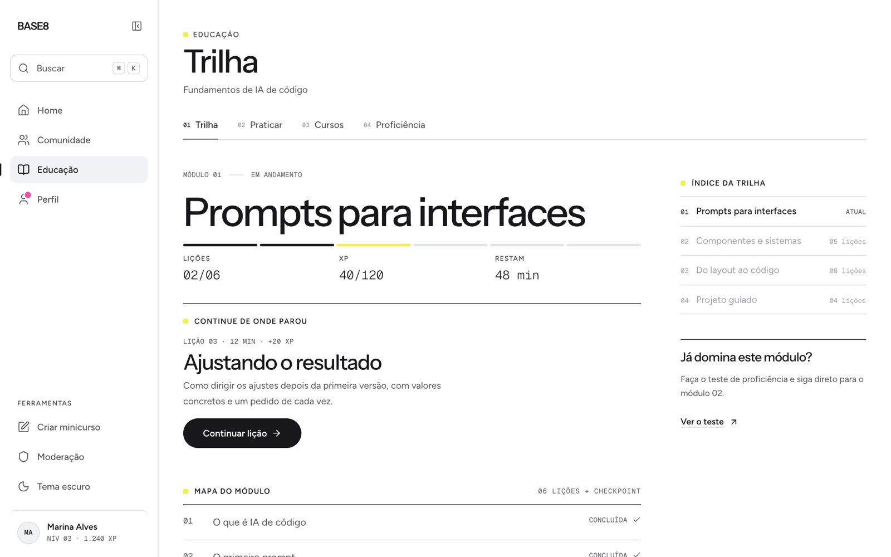
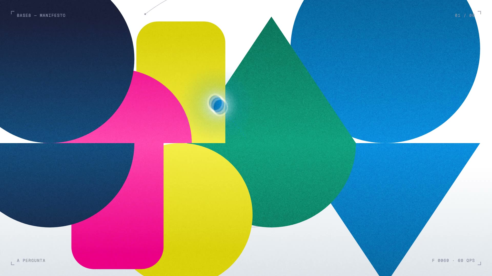
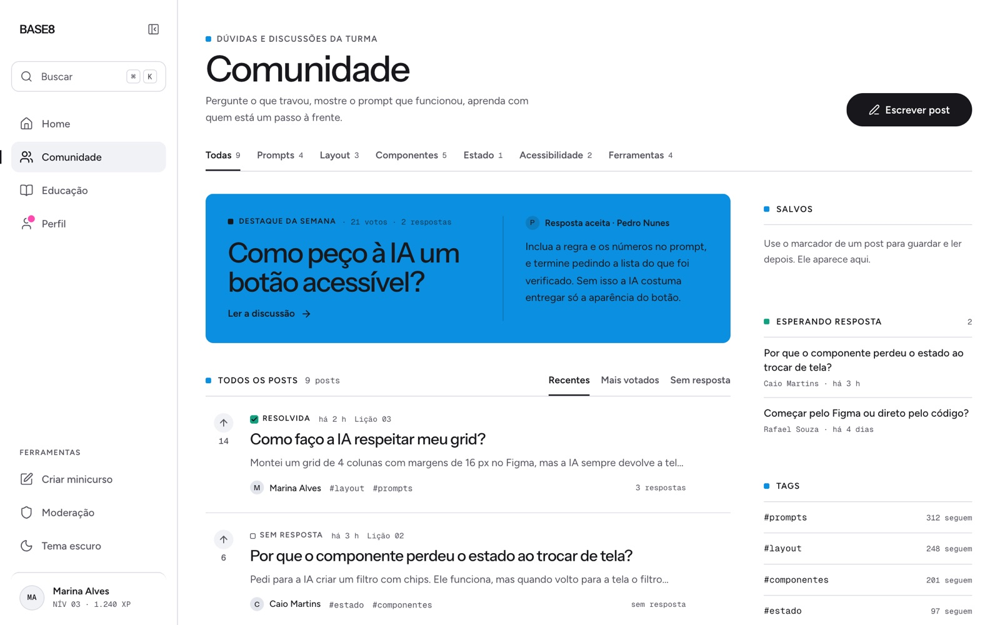
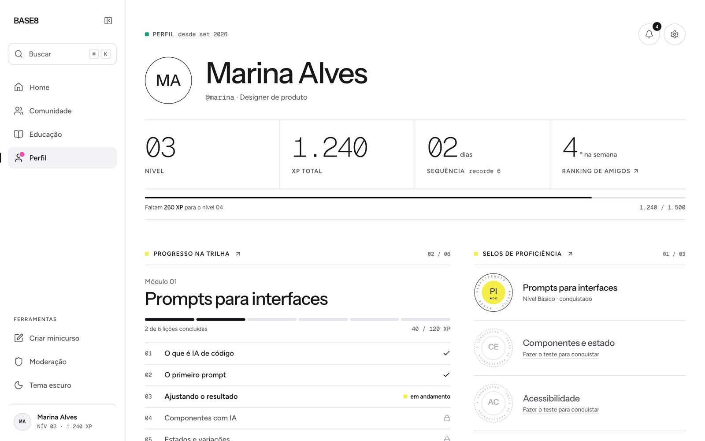
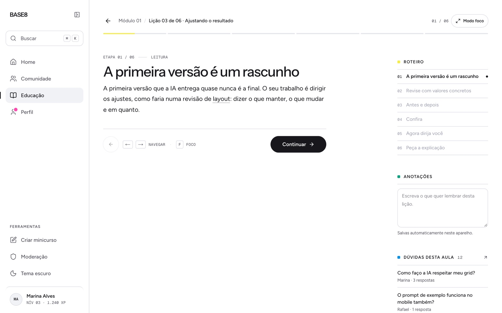
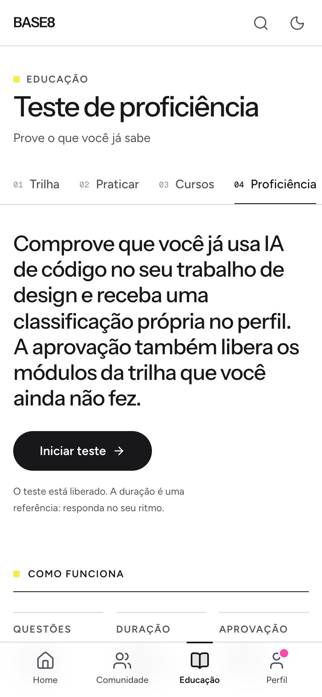

EDUCACIONAL
Aprender a base, no seu ritmo.

O designer e a IA de código
BRUNO HIGASHI · PROJETO VII · DESIGN PUCPR
Uma pergunta muito comum, usada no dia a dia.
“o que a IA não faz?”
pergunta errada.
Apesar de muito usada, acredito que estamos fazendo a pergunta errada.
O que realmente devíamos estar perguntando é:
“o que a IA consegue fazer?”
Entre os designers e criativos entrevistados, nenhum conhecia o verdadeiro potencial da IA de código.
ClaudeCodexCopilote outras
“Dou um comando […] e a IA gera tudo pra mim.”designer gráfico, 5 anos de carreira
“Mais uma insegurança do que uma realidade.”designer
“Falta uma praticidade, uma facilidade maior nessa área.”designer
“algumas horas”דmeses”duas respostas para a mesma pergunta
Por isso, antes de apresentar a solução, quero mostrar até onde dá para ir.
As opções são infinitas.
Mas ainda tem um problema:
como usá-las?
A barreira entre os dois lados ainda é muito grande. Pouca gente conhece e sabe mexer nessas ferramentas.
Não é difícil!
A barreira existe porque isso é pouco falado no design, na música, na ilustração.
Por isso eu decidi criar o
Uma plataforma para capacitar os profissionais da nossa área a usarem ferramentas de IA de código.
universalizarincentivarabrir caminho

O vídeo não carregou.Confira video/manifesto.mp4
Um hub online dividido em três frentes.
Aprender a base, no seu ritmo.

Perguntar, mostrar e ensinar junto.

Seu jeito, seu avanço, seus selos.

Um curso que ensina a base de todas as ferramentas, sem depender de uma só.
repositóriosskillsagenteshooksAPIMCP
Não são complexos, mas são necessários para usar direito. É o básico da programação, não só da IA.

Cursos extras e da comunidade
Abrem depois da base. Ou:
Criados por quem usa. De graça ou pagos.
Perguntas, respostas e posts
no jeito de Reddit, Behance e LinkedIn

Customize, acompanhe seus gastos e seus amigos

Quero rasgar as cortinas de como essas ferramentas funcionam.
entrega o serviço pronto.
ensina como funciona.
Ensinar seria mostrar as cartas.
Mas acredito que ensinar para todos é a melhor forma de avançarmos, com o nosso mercado ainda valorizado e o nosso maior forte em uso:
a criatividade.
O projeto continua depois da faculdade.
Deixe seu e-mail e seja avisado quando a plataforma for lançada.
aponte a câmera
obrigado.
BRUNO HIGASHI · PROJETO VII · DESIGN PUCPR